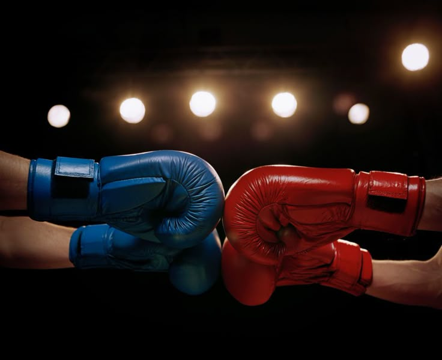

Welkom op Clava
Op deze website leg ik je alles uit over het boksen, een sport die ik persoonlijk helemaal fantastisch vindt. Ik ga jullie wat meer vertelllen over mij en mijn relatie met deze sport.
Ontdek meer
Conditie
Boksen helpt je om sterker, sneller en fitter te worden.
Discipline
Je leert focussen, doorzetten en respectvol omgaan met anderen.
Zelfvertrouwen
Door training krijg je meer vertrouwen in jezelf en je lichaam.